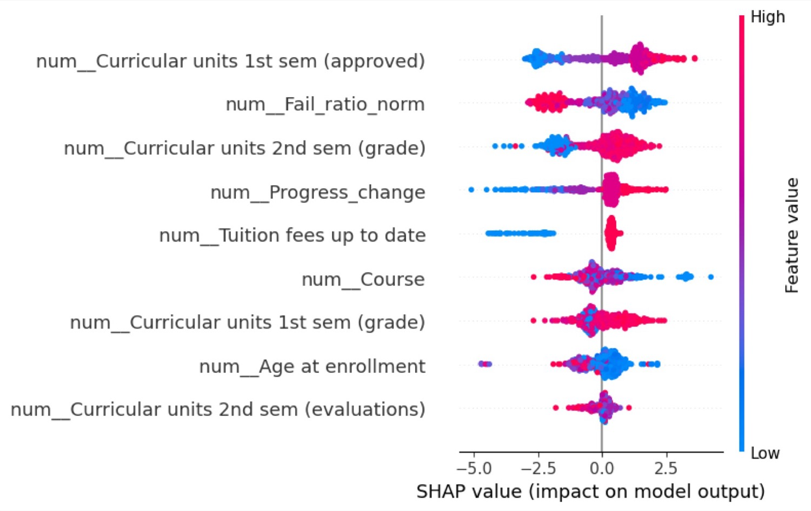
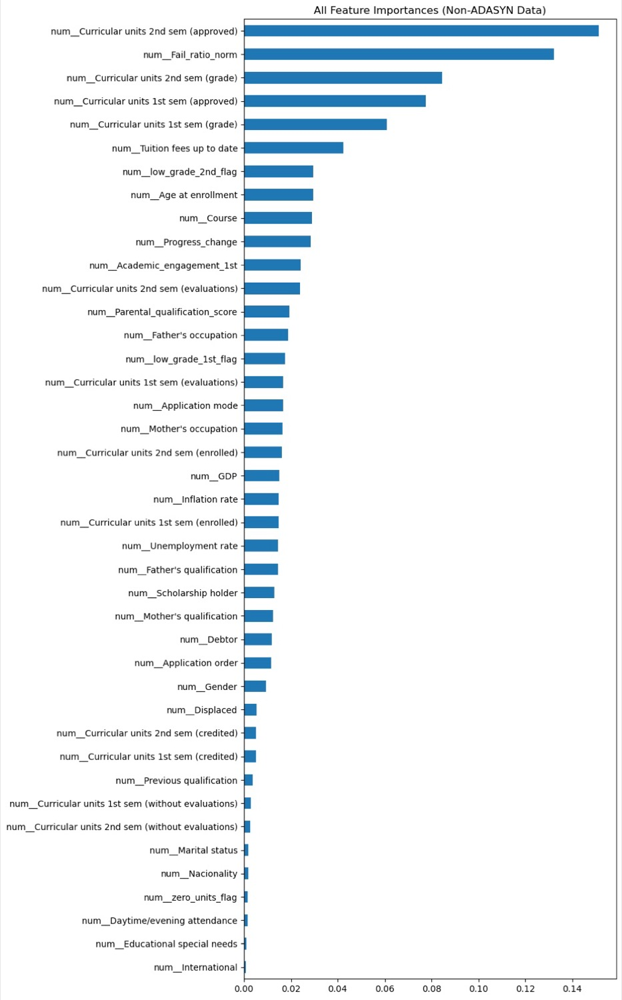

Machine learning — May 2025
Student Dropout Prediction
Given what a university knows about a student after two semesters, can it tell who is about to leave — early enough to do something about it? An end-to-end supervised pipeline over 4,424 student records and 34 features, built to be explainable rather than just accurate.
- Data
- 4,424 records, 34 features
- Task
- Dropout vs. graduate, 3,630 students
- Final model
- Tuned Gradient Boosting
- Held-out ROC-AUC
- 0.943
The data, and the imbalance problem
Each record covers one student: demographics, parental education and occupation, application route, scholarship and debtor status, tuition payment status, macroeconomic conditions at enrolment, and — most importantly — curricular units enrolled, evaluated, approved and graded across the first two semesters.
The outcome column has three values: 1,421 dropped out, 2,209 graduated, and 794 were still enrolled at the time of the snapshot. Students still enrolled have no outcome yet, so the classification task is built on the 3,630 resolved cases. That still leaves the classes uneven, and a model that predicts “graduate” for everyone would score 61% accuracy while being useless.
- ADASYN to synthesise minority-class examples in the regions where the classes actually overlap, plus class weights as a second line of defence.
- Feature selection through Random Forest importance and Boruta, rather than trusting a single ranking.
- Engineered features beyond the raw columns — a normalised fail ratio, progress change between semesters, academic engagement and low-grade flags — which turned out to be among the strongest signals in the final model.

Choosing a model
Three families were screened under the same evaluation harness before any tuning, scored on macro F1 and on recall for the dropout class specifically — because the cost of missing a student who leaves is not the same as the cost of a false alarm.
| Model | Macro F1 | Recall (dropout) | ROC-AUC |
|---|---|---|---|
| Logistic Regression (ADASYN) | 0.839 | 0.814 | 0.936 |
| Random Forest | 0.879 | 0.808 | 0.946 |
| Gradient Boosting | 0.883 | 0.800 | 0.947 |
Gradient Boosting went forward and was tuned by grid search. The Random Forest was tuned too and reached a slightly higher validation ROC-AUC of 0.951, but the boosted model held its advantage on the dropout class, which is the class the whole exercise exists to catch.
Final performance on held-out data
| Class | Precision | Recall | F1 | Support |
|---|---|---|---|---|
| Dropout | 0.893 | 0.934 | 0.913 | 332 |
| Graduate | 0.889 | 0.826 | 0.856 | 213 |
The model catches 93.4% of students who go on to drop out, and when it raises a flag it is right just under 90% of the time. For an intervention system that is the right balance — the cost of a wrongly flagged student is a conversation, and the cost of a missed one is a student who leaves.
Why the model says what it says
A risk score a registrar cannot interrogate will not be used. SHAP values decompose each prediction into per-feature contributions, so a flag comes with a reason attached.


The two rankings agree, and the answer is blunt: coursework outcomes dominate. Units approved and the fail ratio outweigh every demographic variable in the dataset. Two non-academic features do break into the top tier — whether tuition fees are up to date, and age at enrolment — and both are actionable in a way that a parental occupation code is not.
That finding is the useful part. It says a university does not need sensitive background data to run this: the signal is already sitting in the records it keeps anyway.